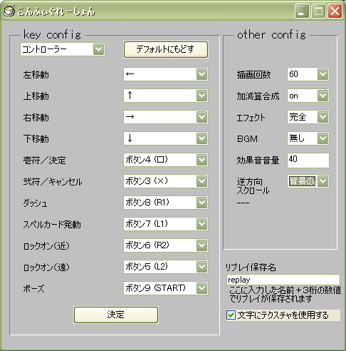
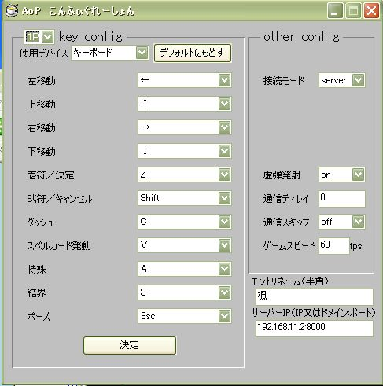
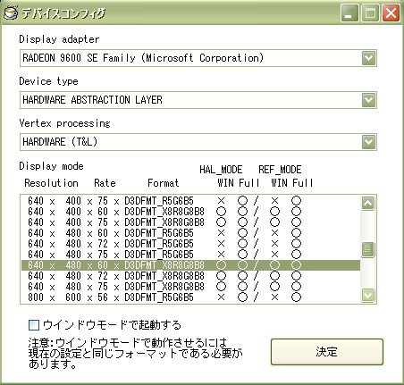

| こんふぃぐ
|
|---|
| 全般設定 |
|
「config.exe」内の「全般設定」のこと。 パチュリのキーコンフィグと、描画回数などの設定が出来ます。  ジョイパッドは１〜４まで共通で使用できます。 設定したい場所にカーソルを合わせて、対応するボタン（キー）を押すと、設定できます。 ○その他のコンフィグ項目 ・描画回数： 一秒間に画面を更新する回数です。 少なくなると、画面がガクガクしますが、処理速度は向上します。 ・加減算合成： 加算合成、減算合成をするかどうかです。 加算減算処理は多少重いので、offにすると、加減算処理をしている場所で処理が速くなります。 ・エフェクト： エフェクトの質です。 簡略にすると、無駄なエフェクトを省いて処理を軽くします。 ・ＢＧＭ： 音楽です。 mid、mp3、ogg、wav、デフォルト、無しから選びます。 ・効果音音量： 効果音の音量です。 ＢＧＭの音量は変えられないので、相対的に効果音音量を変えることで調節してください。 ・逆方向スクロール： 一部にある、スクロールを逆にするエフェクトの有無です。 スクロールが逆の時に画像が消えるなどのバグが出た時は切ってみてください。 ・リプレイ保存名： リプレイを保存する時の名前です。 リプレイデータはこの名前に３桁の番号を加えたものの名前になります。 ・文字にテクスチャを使用する： 文字の描画にテクスチャを使用します。 使用しないと多少重いですが、テクスチャ書き込み機能の付いてないＰＣや 減算合成が出来ないＰＣにはチェックを外しましょう。 会話がうまく表示されない時は上記の条件に当てはまるＰＣだと思ってください。 |
| ＡｏＰ設定 |
|
「config.exe」内の「ＡｏＰ設定」のこと。 ＡｏＰのキーコンフィグと、ネットワーク対戦の設定が出来ます。  ジョイパッドは１〜４まで使用できます。 使用したいデバイスに合わせ、上記と同様にコンフィグしてください。 設定したい場所にカーソルを合わせて、対応するボタン（キー）を押すと、設定できます。 ○その他のコンフィグ項目 ・接続モード： サーバーとなるかクライアントとなるかです。 サーバーは指定したポートを解放しておく必要があります。 ・虚弾発射： 虚弾を撃つかどうかです。 重たい、虚弾が煩わしいなどなら消してください。 通信対戦時は（サーバー）の設定に合わされます。 ・通信ディレイ： 通信の取得を遅らせて、通信時間による遅延を軽減します。 その分キーレスポンスが悪くなります。 通信対戦時は（サーバー）の設定に合わされます。 ・通信スキップ： 通信するペースを落として、通信負荷を軽減します。 その分キーレスポンスが悪くなります。 通信対戦時は（サーバー）の設定に合わされます。 ・ゲームスピード： ゲームの速度を変化させます。 通信対戦時は（サーバー）の設定に合わされます。 ・エントリネーム： 通信対戦時に表示される名前です。また通信対戦のリプレイネームにも使用されます。 ・サーバーＩＰ： 接続モードがサーバーとなっている人のＩＰ（ドメイン）アドレス及びポートを入力します。 入力は「ＩＰ（ドメイン）アドレス:ポート番号」と書いてください サーバー側もここで書かれるポート番号を使用するため「:ポート番号」の部分は書いてください ポート番号は「:」の後ろから数字以外の文字までの数値を使用します。 コメントを付ける時は必ず数字以外の文字（空白など）で区切ってください |
| 画面設定 |
|
「config.exe」内の「画面設定」のこと。 使用デバイスや画面の大きさ、フルスクリーンの設定をします。  ・Display adapter ディスプレイアダプタの名前。 二つ以上持っているときは、どちらか選んでください。 ・Device type デバイスタイプです。 ハードウエアーアブストラクションレイヤー(HAL)： ビデオカードを通した高速なレンダリング処理を行います。 リファレンス ラスタライザ (REF)： ビデオカードを通さないMicrosoft Direct3Dによるソフトウエアーレンダリング処理を行います。 速度的には HAL が最も高速で、REFはその数十〜数百分の一以下の速度です。 REFは遅いかわり、ビデオカードの能力にかかわらずステンシルバッファや環境マッピング等の機能を実行する能力を持っています。 ・Vertex processing 動作フラグです。 HARDWARE(T&L)： 頂点変換やライティング処理をビデオカード側で行います。 これによりCPUの負担が軽減され処理速度が向上します。 SOFTWARE： ＣＰＵ側で処理を行います。 ビデオカードの性能が低く、上手く起動できない時に設定してください。 ・Display mode ディスプレイのモードです。 左から「ウィンドウの解像度」「リフレッシュレート」「フォーマット」「それぞれのモードでのウィンドウモードの可否」となっています。 ウィンドウモードで起動するにチェックを入れると、全画面ではなくウィンドウで起動します。 |